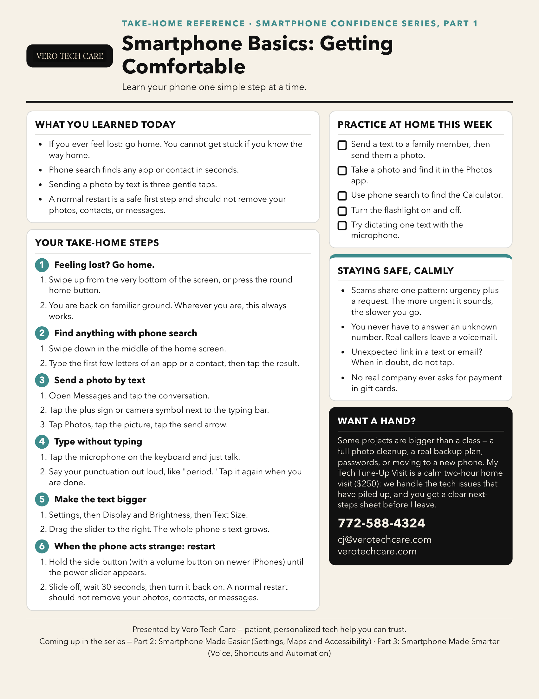

Part 1: Getting Comfortable
← Back to the Smartphone Confidence Series
Part 1 introduced a calmer way to use a smartphone: how to return to the Home screen, find apps and contacts, send texts and photos, use voice typing, make text easier to read, and restart a phone when it acts strange.
We also practiced slowing down around urgent calls, messages, and links. The goal was not to memorize every button. It was to leave with a few reliable habits, more confidence, and permission to pause and ask for help.
Take the detailed handout with you
The handout includes the step-by-step reminders and at-home practice list from class. Download the PDF, or save the handout picture below directly to your phone.
